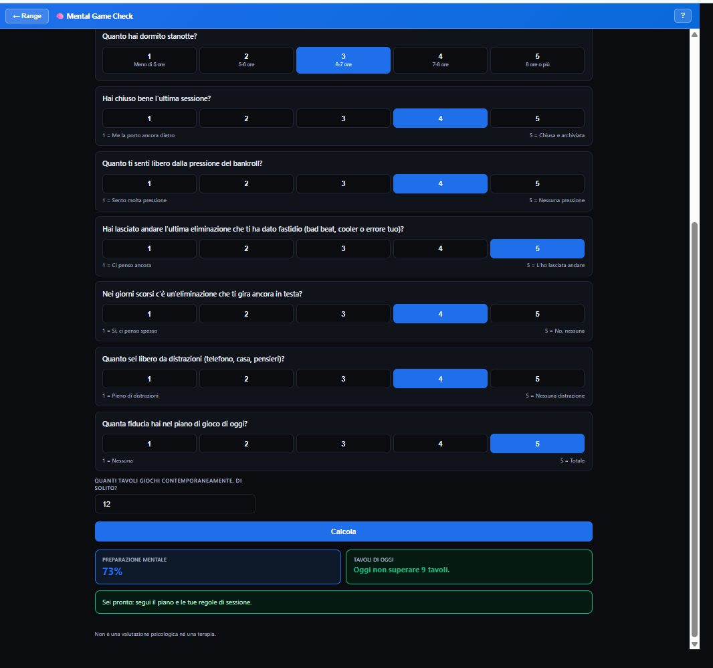
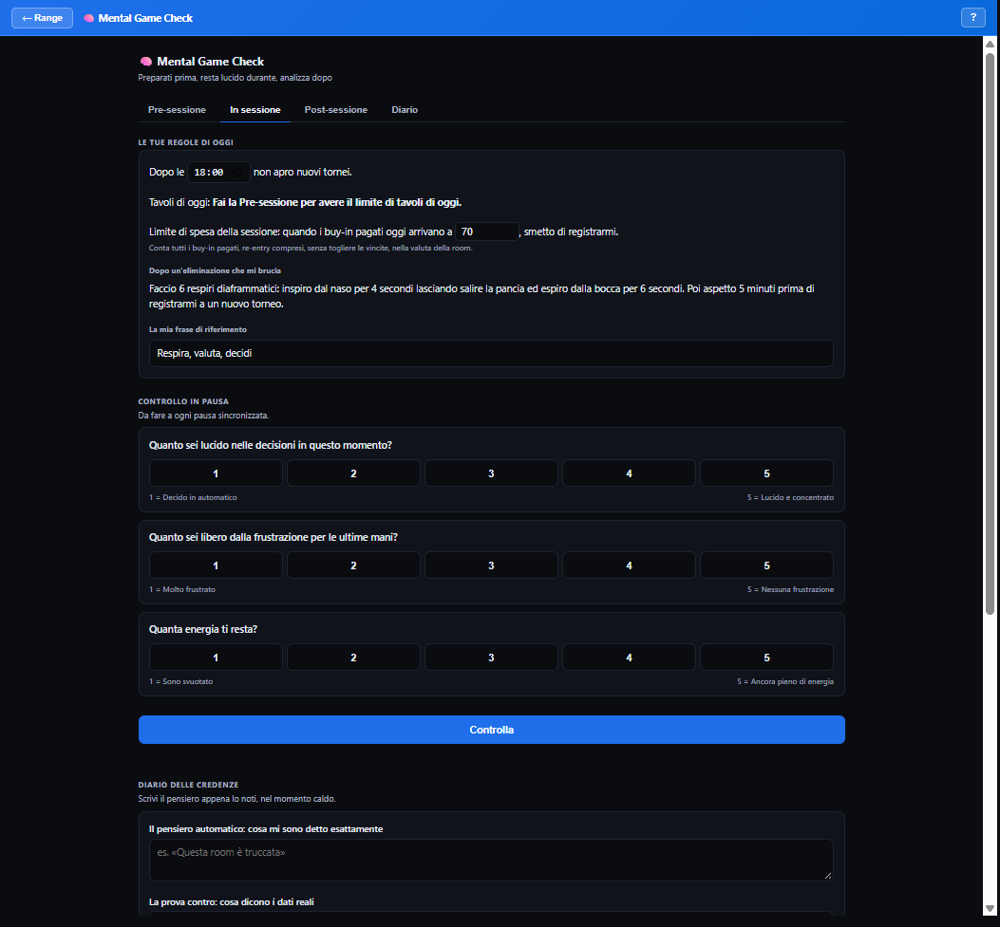
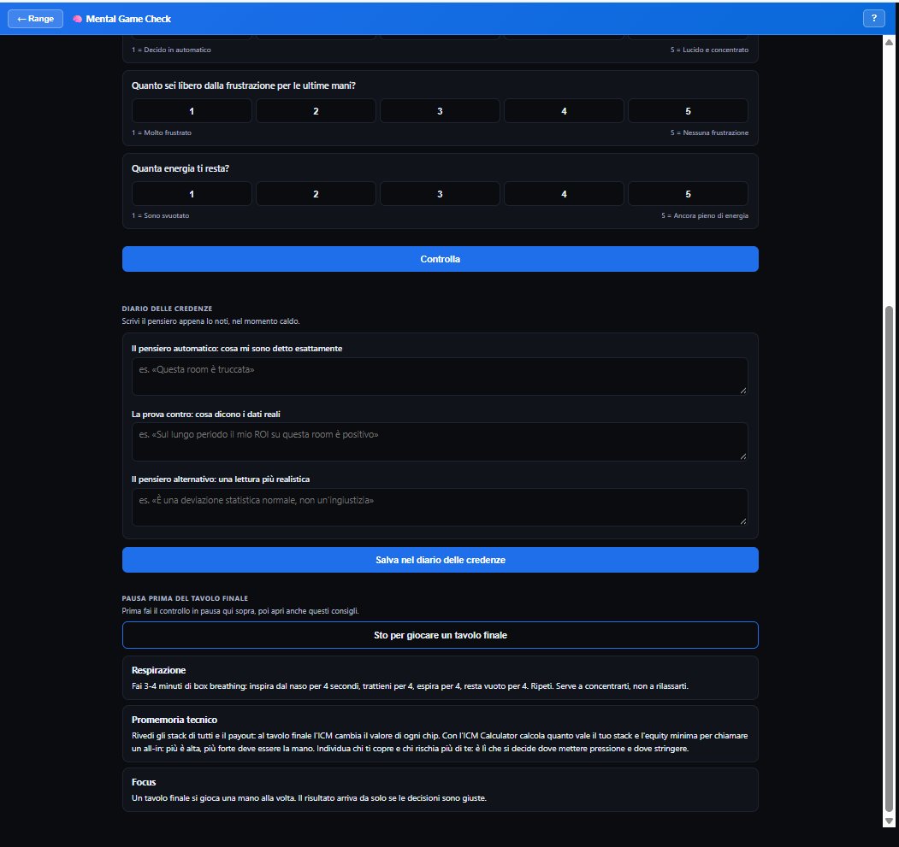
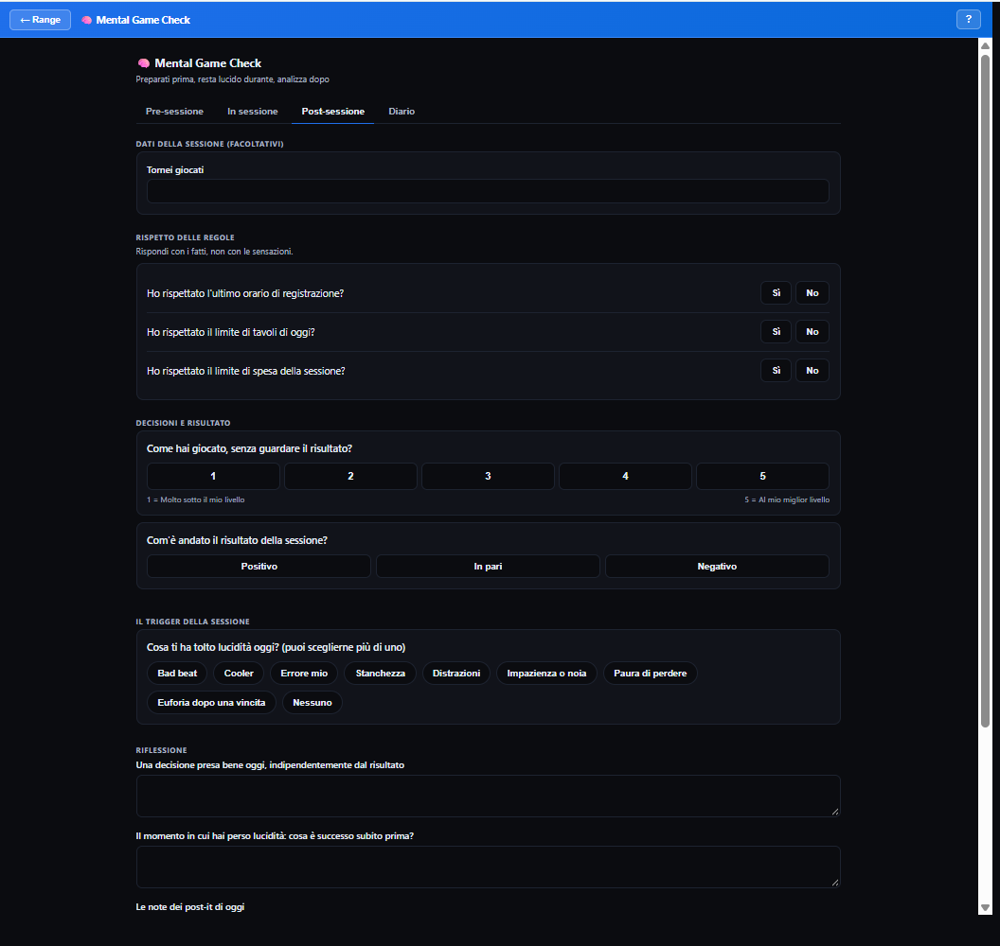
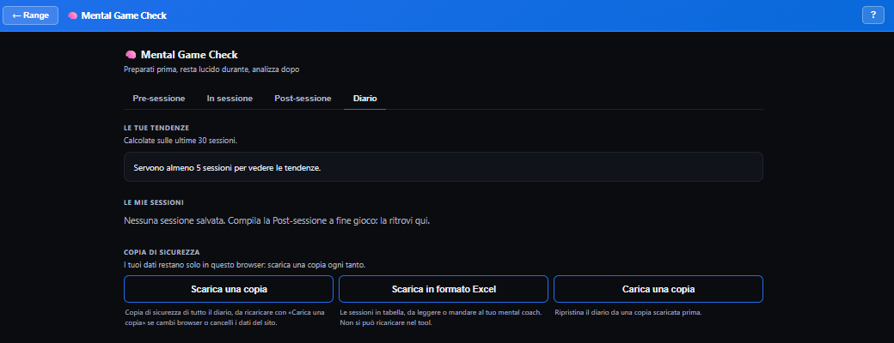

Prepara la sessione, resta lucido mentre giochi, analizza com'è andata. Il Mental Game Check trasforma il tuo stato mentale in decisioni concrete: quanti tavoli aprire, quando rallentare, cosa correggere la volta dopo.
Nei tornei la varianza non la controlli. Puoi controllare con quale stato mentale ti siedi al tavolo, quante sessioni giochi stanco o arrabbiato e quante volte rompi le regole che ti eri dato. Il Mental Game Check ti aiuta a farlo ogni giorno, in pochi minuti: prima, durante e dopo la sessione. Non è una valutazione psicologica né una terapia.
Rispondi a 10 domande da 1 a 5 su come stai oggi: sonno, stato emotivo, eliminazioni dei giorni scorsi e altro. Indica quanti tavoli giochi di solito contemporaneamente e premi Calcola. Vedi la tua preparazione mentale in percentuale, quanti tavoli giocare oggi e i consigli per le aree con più margine di crescita. In cima trovi la cosa da correggere che hai scelto alla fine della sessione precedente.



Indichi se hai rispettato le regole e giudichi la qualità del tuo gioco separata dal risultato. Segni cosa ti ha disturbato e scegli una sola cosa da correggere, che ritrovi in cima alla prossima Pre-sessione. Con Salva nel diario chiudi la sessione.

Le tue sessioni e le tue credenze, giorno per giorno. Dopo almeno 5 sessioni vedi le tendenze: il trigger più frequente, la preparazione media, quanto rispetti le regole e se il giudizio sul tuo gioco segue il risultato, cioè se giudichi di aver giocato bene solo quando vinci.

Le risposte restano nel tuo browser. Per calcolare punteggi e tendenze, al server arrivano solo i numeri necessari, senza le tue note, e non vengono salvati. Puoi scaricare una copia del diario o esportarlo in Excel per il tuo mental coach.
Creato da Danilo Rucchetta, giocatore professionista di MTT e mental coach sportivo certificato.